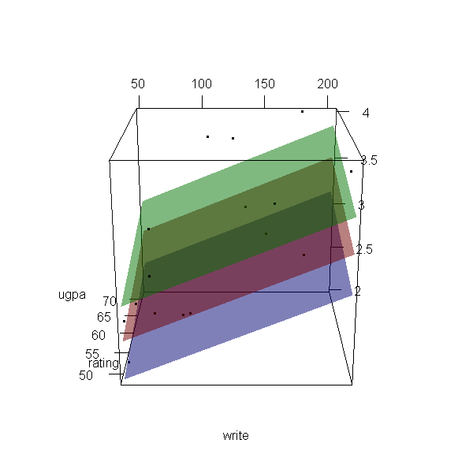

Interval regression is used to model outcomes that have interval censoring. In other words, you know the ordered category into which each observation falls, but you do not know the exact value of the observation. Interval regression is a generalization of censored regression.
This page uses the following packages. Make sure that you can load
them before trying to run the examples on this page. If you do not have
a package installed, run: install.packages("packagename"), or
if you see the version is out of date, run: update.packages().
require(foreign) require(ggplot2) require(GGally) require(survival) require(rgl)
Version info: Code for this page was tested in R Under development (unstable) (2012-11-16 r61126)
On: 2012-12-15
With: rgl 0.92.894; survival 2.36-14; GGally 0.4.2; reshape 0.8.4; plyr 1.8; ggplot2 0.9.3; foreign 0.8-51; knitr 0.9
Please note: The purpose of this page is to show how to use various data analysis commands. It does not cover all aspects of the research process which researchers are expected to do. In particular, it does not cover data cleaning and checking, verification of assumptions, model diagnostics or potential follow-up analyses.
Examples of interval regression
Example 1. We wish to model annual income using years of education and marital status. However, we do not have access to the precise values for income. Rather, we only have data on the income ranges: <$15,000, $15,000-$25,000, $25,000-$50,000, $50,000-$75,000, $75,000-$100,000, and >$100,000. Note that the extreme values of the categories on either end of the range are either left-censored or right-censored. The other categories are interval censored, that is, each interval is both left- and right-censored. Analyses of this type require a generalization of censored regression known as interval regression.
Example 2. We wish to predict GPA from teacher ratings of effort and from reading and writing test scores. The measure of GPA is a self-report response to the following item:
Select the category that best represents your overall GPA. less than 2.0 2.0 to 2.5 2.5 to 3.0 3.0 to 3.4 3.4 to 3.8 3.8 to 3.9 4.0 or greater
Again, we have a situation with both interval censoring and left- and right-censoring. We do not know the exact value of GPA for each student; we only know the interval in which their GPA falls.
Example 3. We wish to predict GPA from teacher ratings of effort, writing test scores and the type of program in which the student was enrolled (vocational, general or academic). The measure of GPA is a self-report response to the following item:
Select the category that best represents your overall GPA. 0.0 to 2.0 2.0 to 2.5 2.5 to 3.0 3.0 to 3.4 3.4 to 3.8 3.8 to 4.0
This is a slight variation of Example 2. In this example, there is only interval censoring.
Description of the data
Let’s pursue Example 3 from above.
We have a hypothetical data file, intreg_data.dta with 30 observations.
The GPA score is represented by two values, the lower interval score (lgpa) and the upper
interval score (ugpa). The writing test scores, the teacher rating
and the type of program (a nominal variable which has three levels) are
write, rating and type, respectively.
Let’s look at the data. It is always a good idea to start with descriptive statistics.
dat <- read.dta("https://stats.idre.ucla.edu/stat/data/intreg_data.dta") # summary of the variables summary(dat)
## id lgpa ugpa write rating ## Min. : 1.00 Min. :0.0 Min. :2.0 Min. : 50 Min. :48.0 ## 1st Qu.: 8.25 1st Qu.:2.0 1st Qu.:2.5 1st Qu.: 70 1st Qu.:51.6 ## Median :15.50 Median :2.5 Median :3.0 Median :105 Median :54.0 ## Mean :15.50 Mean :2.6 Mean :3.1 Mean :114 Mean :57.5 ## 3rd Qu.:22.75 3rd Qu.:3.3 3rd Qu.:3.7 3rd Qu.:154 3rd Qu.:66.2 ## Max. :30.00 Max. :3.8 Max. :4.0 Max. :205 Max. :72.0 ## type ## vocational: 8 ## general :10 ## academic :12 ## ## ##
# bivariate plots ggpairs(dat[, -1], lower = list(combo = "box"), upper = list(combo = "blank"))
Note that there are two GPA responses for each observation,
lgpa for the lower end of the interval and
ugpa for the upper end. We can compare the means of the variables
by each type of program using by.
by(dat[, 2:5], dat$type, colMeans, na.rm = TRUE)
## dat$type: vocational ## lgpa ugpa write rating ## 1.750 2.438 71.875 52.500 ## -------------------------------------------------------- ## dat$type: general ## lgpa ugpa write rating ## 2.78 3.24 148.00 56.80 ## -------------------------------------------------------- ## dat$type: academic ## lgpa ugpa write rating ## 3.017 3.417 113.333 61.500
Analysis methods you might consider
Below is a list of some analysis methods you may have encountered. Some of the methods listed are quite reasonable, while others have either fallen out of favor or have limitations.
- Interval regression – This method is appropriate when you know into what interval each observation of the outcome variable falls, but you do not know the exact value of the observation.
- Ordered probit – It is possible to conceptualize this model as an ordered probit regression with six ordered categories: 0 (0.0-2.0), 1 (2.0-2.5), 2 (2.5-3.0), 3 (3.0-3.4), 4 (3.4-3.8), and 5 (3.8-4.0).
- Ordinal logistic regression – The results would be very similar in terms of which predictors are significant; however, the predicted values would be in terms of probabilities of membership in each of the categories. It would be necessary that the data meet the proportional odds assumption which, in fact, these data do not meet when converted into ordinal categories.
- OLS regression – You could analyze these data using OLS regression on the midpoints of the intervals. However, that analysis would not reflect our uncertainty concerning the nature of the exact values within each interval, nor would it deal adequately with the left- and right-censoring issues in the tails.
Interval regression
We will use the survival package to run the interval regression.
First we setup a survival object that contains the censored intervals using
the Surv function. Note the special event status code, 3,
used for all observations indicating that all had interval censoring.
Then we estimate the model using the survreg function.
# setup the survival object with interval censoring (Y <- with(dat, Surv(lgpa, ugpa, event = rep(3, nrow(dat)), type = "interval")))
## [1] [2.5, 3.0] [3.4, 3.8] [2.5, 3.0] [0.0, 2.0] [3.0, 3.4] [3.4, 3.8] ## [7] [3.8, 4.0] [2.0, 2.5] [3.0, 3.4] [3.4, 3.8] [2.0, 2.5] [2.0, 2.5] ## [13] [2.0, 2.5] [2.5, 3.0] [2.5, 3.0] [2.5, 3.0] [3.4, 3.8] [2.5, 3.0] ## [19] [2.0, 2.5] [3.0, 3.4] [3.4, 3.8] [3.8, 4.0] [2.0, 2.5] [3.0, 3.4] ## [25] [3.4, 3.8] [2.0, 2.5] [2.0, 2.5] [2.0, 2.5] [2.5, 3.0] [2.5, 3.0]
m <- survreg(Y ~ write + rating + type, data = dat, dist = "gaussian") summary(m)
## ## Call: ## survreg(formula = Y ~ write + rating + type, data = dat, dist = "gaussian") ## Value Std. Error z p ## (Intercept) 1.10386 0.44529 2.48 1.32e-02 ## write 0.00528 0.00169 3.12 1.79e-03 ## rating 0.01331 0.00912 1.46 1.44e-01 ## typegeneral 0.37485 0.19275 1.94 5.18e-02 ## typeacademic 0.70975 0.16684 4.25 2.10e-05 ## Log(scale) -1.23726 0.15964 -7.75 9.17e-15 ## ## Scale= 0.29 ## ## Gaussian distribution ## Loglik(model)= -33.1 Loglik(intercept only)= -51.7 ## Chisq= 37.24 on 4 degrees of freedom, p= 1.6e-07 ## Number of Newton-Raphson Iterations: 5 ## n= 30
- At the top, the call that careated the model is echoed, followed by
the table of coefficients containing the interval regression coefficients,
their standard errors, z-values, and p-values.
The coefficients for
writeandacademicare statistically significant; the coefficient forratingandgeneralare not (at the .05 level of significance). - At the end, it indicates the distribution assumed, here Gaussian, followed by the log likelihood of the model and an intercept only model, as well as a likelihood ratio chi square test of the overall model. The test on four degrees of freedom is statistically significant indicating the overall model is significant.
- The variable
writeis statistically significant. A one unit increase in writing score leads to a .005 increase in predicted GPA. One of the indicator variables fortype, academic, is also statistically significant. Compared to vocational programs, the predicted achievement for academic programs is about .71 higher. To determine iftypeitself is statistically significant, we can examine an analysis of deviance table, which is shown below. - The ancillary statistic Scale (and Log(scale), the natural logarithm of Scale)
is equivalent to the standard error of the estimate in OLS regression.
The value of 0.29 can be compared to the standard deviations for
lgpaandugpaof 0.78 and 0.57, respectively. This shows a substantial reduction. The output also contains an estimate of the standard error of the Log(scale).
We can get a test of the overall effect of type by examining an analysis of deviance table, which reports the sequential deviances (-2*LL) adding one term at a time.
# analysis of deviance table anova(m)
## Df Deviance Resid. Df -2*LL Pr(>Chi) ## NULL NA NA 28 103.49 NA ## write 1 16.689 27 86.81 4.403e-05 ## rating 1 6.097 26 80.71 1.354e-02 ## type 2 14.450 24 66.26 7.280e-04
The two degree of freedom test for type indicates that it is
statistically significant.
Now let’s make a 3d plot of the data and the predicted regression planes.
We will put the two continuous predictors on the X and Y axis, and the
outcome on the Z axis. Then we will use different colours to code the
program type. To do this, we will use the rgl package. Finally
because it is difficult to see a 3d image in two dimensions, let’s
make it an animated image so we can see it from different angles.
For the final part, the free software, ImageMagick is used by
the rgl package behind the scenes.
# for the regression surface f <- function(x, y, type = "vocational") { newdat <- data.frame(write = x, rating = y, type = factor(type, levels = levels(dat$type))) predict(m, newdata = newdat) } # Create X, Y, and Z grids X <- with(dat, seq(from = min(write), to = max(write), length.out = 10)) Y <- with(dat, seq(from = min(rating), to = max(rating), length.out = 10)) Z <- outer(X, Y, f) # Create 3d scatter plot and add the regression surface open3d(windowRect = c(100, 100, 700, 700))
## [1] 1
with(dat, plot3d(x = write, y = rating, z = ugpa, xlab = "write", ylab = "rating", zlab = "ugpa", xlim = range(write), ylim = range(rating), zlim = range(ugpa))) par3d(ignoreExtent = TRUE) # add regression surface for each type of program in a different colour # with 50 percent transparency (alpha = .5) surface3d(X, Y, outer(X, Y, f, type = "vocational"), col = "blue", alpha = 0.5) surface3d(X, Y, outer(X, Y, f, type = "general"), col = "red", alpha = 0.5) surface3d(X, Y, outer(X, Y, f, type = "academic"), col = "green", alpha = 0.5) # create an animated movie movie3d(spin3d(axis=c(.5,.5,.5), rpm=5), # duration=6, dir = 'intreg_fig')

It is not a true R2, but we can get a rough idea by
computing the correlation between the expected values from the model
and the lower and upper bounds of gpa, lgpa and ugpa.
Then the squared correlation is something like an R2.
(r <- with(dat, cor(cbind(yhat = predict(m), lgpa, ugpa))))
## yhat lgpa ugpa ## yhat 1.0000 0.7946 0.8430 ## lgpa 0.7946 1.0000 0.9488 ## ugpa 0.8430 0.9488 1.0000
# pseudo R2
r^2
## yhat lgpa ugpa ## yhat 1.0000 0.6314 0.7107 ## lgpa 0.6314 1.0000 0.9002 ## ugpa 0.7107 0.9002 1.0000
References
- Long, J. S. (1997). Regression Models for Categorical and Limited Dependent Variables. Thousand Oaks, CA: Sage Publications.
- Stewart, M. B. (1983). On least squares estimation when the dependent variable is grouped. Review of Economic Studies 50: 737-753.
- Tobin, J. (1958). Estimation of relationships for limited dependent variables. Econometrica 26: 24-36.